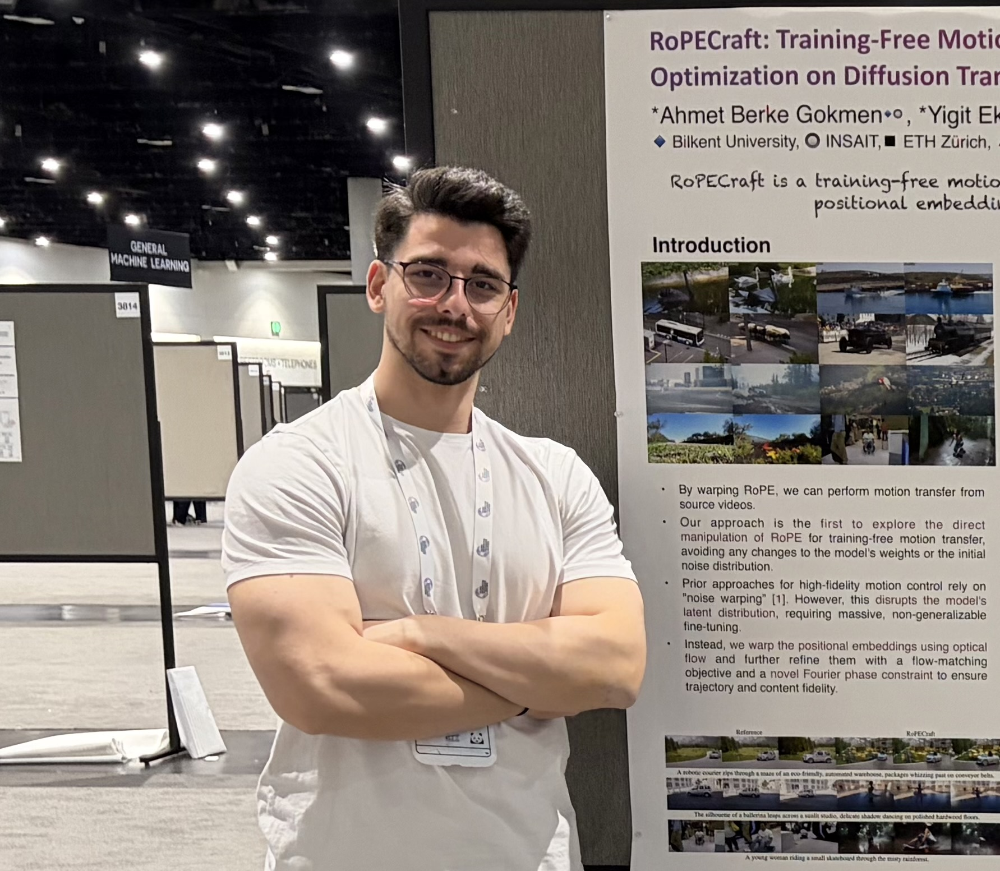
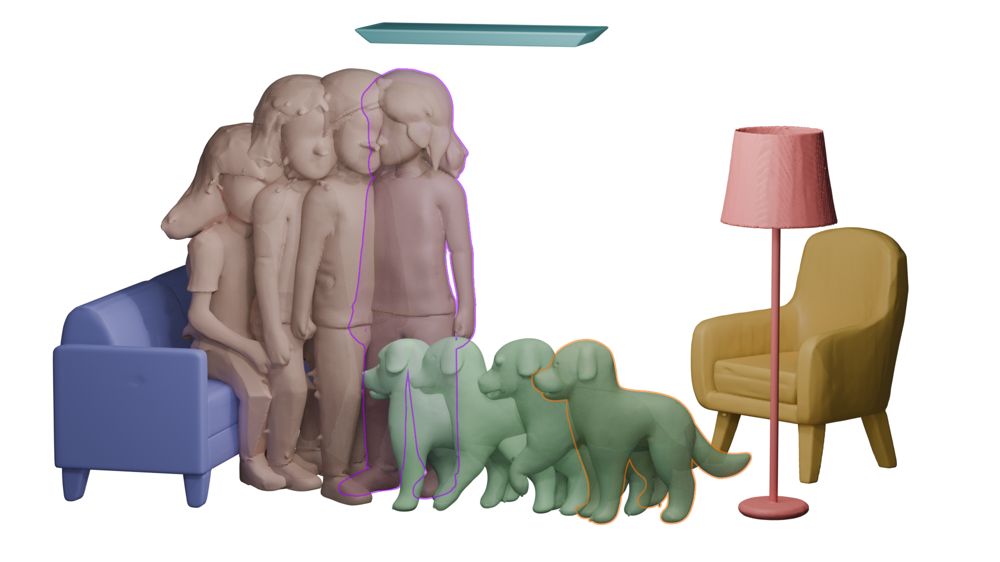
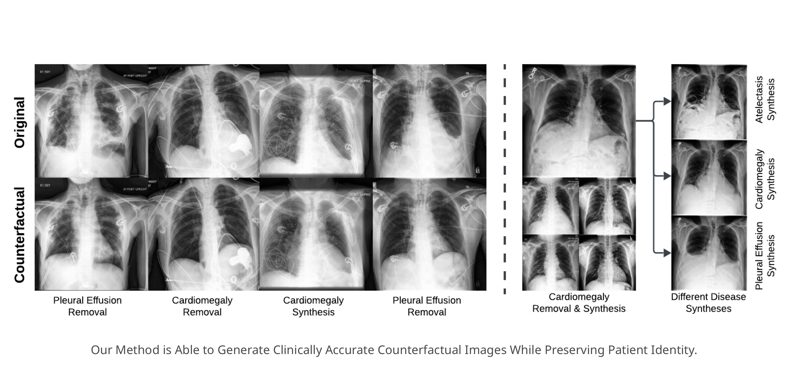
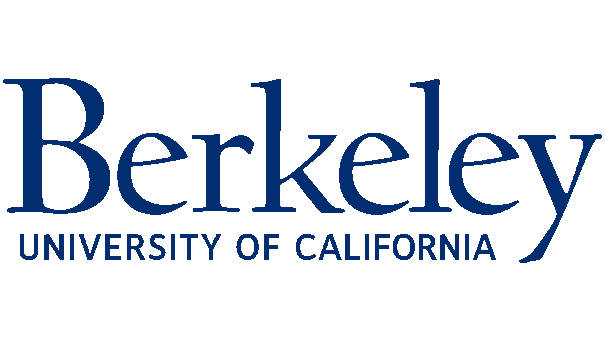
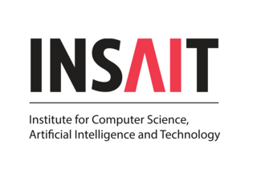
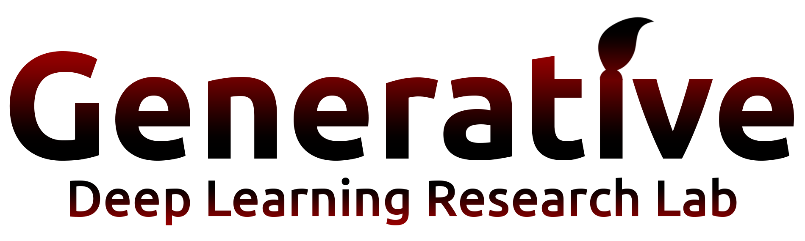
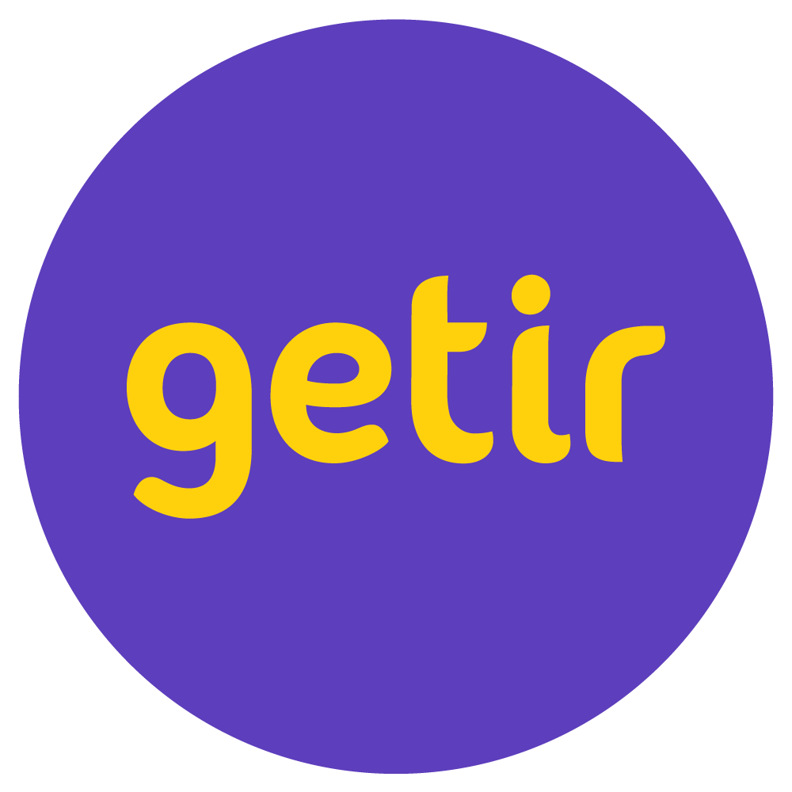
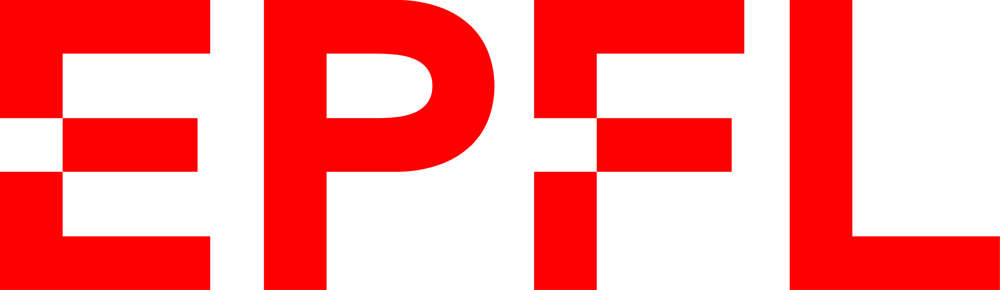
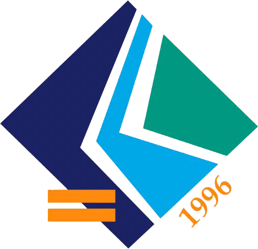
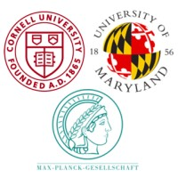

A. Berke Gökmen
Hi! I am a first-year PhD student at UC Berkeley EECS advised by Prof. Trevor Darrell.
I am interested in computer vision, machine learning, and robotics. My research focuses on developing algorithms for visual perception and understanding in autonomous systems.
E-mail: a.berke[at]berkeley[dot]edu

News
- Heading to UC Berkeley EECS for my PhD!
- Our work COM4D is accepted to CVPR 2026! Check out the paper.
- Our work COM4D is on arXiv!
Older news
- Joined INSAIT as a Researcher in Sofia, Bulgaria.
- Our work RoPECraft is accepted to NeurIPS 2025!
- Our work Dual Encoder GAN Inversion is accepted to NeurIPS 2024!
- Started as a Research Intern at ETH Zürich Computer Vision Lab (CVL).
- Started as an Undergraduate Researcher at Bilkent University DLR.
Publications
-

Inferring Compositional 4D Scenes without Ever Seeing One
-
RoPECraft: Training-Free Motion Transfer with Trajectory Guided Optimization on DiTs
-
Dual Encoder GAN Inversion for High-fidelity 3D Head Reconstruction from Single Images
-
Identity Preserving 3D Head Stylization with Multiview Score Distillation
-

Counterfactual Disease Removal and Generation in Chest X-Rays Using Diffusion Models
Experience & education
Research & work

UC Berkeley EECS · PhD StudentAug 2026 - Present · Berkeley, CA
INSAIT · ResearcherAug 2025 – Aug 2026 · Sofia- ETH Zürich CVL · Research InternJul 2024 – Nov 2024 · Zürich

Bilkent DLR · Undergraduate ResearcherJan 2024 – Aug 2025 · Ankara
Getir · Software EngineerSep 2022 – Jan 2024 · Istanbul
Education
- UC Berkeley EECS · PhD StudentAug 2026 - Present · Berkeley, CA
 Bilkent University · B.E. Computer Science2020 – 2025 · Ankara
Bilkent University · B.E. Computer Science2020 – 2025 · Ankara
EPFL · Exchange, Computer Science2023 – 2024 · Lausanne
Çanakkale Özel Fen Lisesi · Math & Science DiplomaÇanakkale
Short-term schools
- MBZUAI Winter School on Generative AI and Representation LearningFeb 2026 · Abu Dhabi

Cornell, Maryland, Max Planck Pre-doctoral Research School in Computer ScienceAug 2025 · Saarbrücken
For undergraduates
If you’re an undergraduate at UC Berkeley interested in research opportunities, feel free to reach out to me by email.
Türkiye’deki lisans öğrencileri: Sorularınız için bana e-posta gönderebilirsiniz.